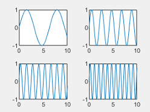
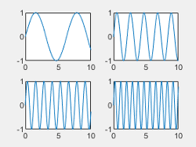
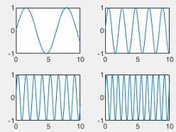

tiledlayout
Create tiled chart layout for displaying subplots
Syntax
Description
tiledlayout creates a tiled
chart layout for displaying multiple plots, also called subplots, in the current figure. The
layout can display any number of plots and reflow according to the size of the figure and
the number of axes. If there is no figure, MATLAB® creates a figure and places the layout into it. If the current figure contains
an existing layout or axes, MATLAB replaces it with a new layout. (since R2024b)
A tiled chart layout contains an invisible grid of tiles that covers the entire figure
or parent container. Each tile can contain an axes object for displaying a plot. After
creating a layout, call the nexttile
function to place an axes object into the layout. Then call a plotting function to plot into
the axes.
tiledlayout( creates a layout that
can hold any number of axes. Initially, there is only one empty tile that fills the entire
layout. Specify an arrangement value to control the placement of subsequent axes:arrangement)
"flow"— Create a layout for a grid of axes that can reflow depending on the size of the figure and the number of axes."vertical"— Create a layout for a vertical stack of axes. (since R2023a)"horizontal"— Create a layout for a horizontal stack of axes. (since R2023a)
You can specify the arrangement argument without
parentheses. For example, tiledlayout vertical creates a layout for a
vertical stack of axes.
tiledlayout(___,
specifies additional options for the layout using one or more name-value pair arguments.
Specify the options after all other input arguments. For example,
Name,Value)tiledlayout(2,2,"TileSpacing","compact") creates a 2-by-2 layout with
minimal spacing between the tiles. For a list of properties, see TiledChartLayout Properties.
tiledlayout( creates
the layout in the specified parent container rather than in the current figure. Specify the
parent container before all other input arguments.parent,___)
t = tiledlayout(___) returns the
TiledChartLayout object. Use t to configure
properties of the layout after creating it.
Examples
Create a 2-by-2 tiled chart layout, and call the peaks function to get the coordinates of a predefined surface. Create an axes object in the first tile by calling the nexttile function. Then call the surf function to plot into the axes. Repeat the process using different plotting functions for the other three tiles.
tiledlayout(2,2); [X,Y,Z] = peaks(20); % Tile 1 nexttile surf(X,Y,Z) % Tile 2 nexttile contour(X,Y,Z) % Tile 3 nexttile imagesc(Z) % Tile 4 nexttile plot3(X,Y,Z)

Since R2024b
Create four coordinate vectors: x, y1, y2, and y3.
x = linspace(0,30); y1 = sin(x/2); y2 = sin(x/3); y3 = sin(x/4);
To create a tiled chart layout that can accommodate any number of plots, call the tiledlayout function without any input arguments. (You can also use the tiledlayout("flow") command, which produces the same result.)
Create the first axes by calling the nexttile function. Then plot y1 against x in the axes and add a title. This plot fills the entire layout.
tiledlayout
nexttile
plot(x,y1)
title("Plot of sin(x/2)")
Create a second tile and axes, and plot into the axes.
nexttile
plot(x,y2)
title("Plot of sin(x/3)")
Repeat the process to create a third plot.
nexttile
plot(x,y3)
title("Plot of sin(x/4)")
Repeat the process to create a fourth plot. This time, plot all three lines in the same axes by calling hold on after plotting y1.
nexttile plot(x,y1) hold on plot(x,y2) plot(x,y3) title("Three Sine Waves") hold off

Create a tiled chart layout that has a vertical stack of plots by specifying the "vertical" option when you call the tiledlayout function. Then create three plots by calling the nexttile function followed by a plotting function. Each time you call nexttile, a new axes object is added to the bottom of the stack.
tiledlayout("vertical")
x = 0:0.1:5;
nexttile
plot(x,sin(x))
nexttile
plot(x,sin(x+1))
nexttile
plot(x,sin(x+2))
Create a tiled chart layout that has a horizontal stack of plots by specifying the "horizontal" option when you call the tiledlayout function. Then create three plots by calling the nexttile function followed by a plotting function. Each time you call nexttile, a new axes object is added to the right side of the stack.
tiledlayout("horizontal")
x = 0:0.1:10;
nexttile
plot(x,sin(x/2))
nexttile
plot(x,sin(x))
nexttile
plot(x,sin(2*x))
Create five coordinate vectors: x, y1, y2, y3, and y4. Then call the tiledlayout function to create a 2-by-2 layout and specify a return argument to store the TileChartLayout object. Call the nexttile function to create an axes object in the next empty tile before calling the plot function.
x = linspace(0,30); y1 = sin(x); y2 = sin(x/2); y3 = sin(x/3); y4 = sin(x/4); t = tiledlayout(2,2); % Tile 1 nexttile plot(x,y1) % Tile 2 nexttile plot(x,y2) % Tile 3 nexttile plot(x,y3) % Tile 4 nexttile plot(x,y4)

Decrease the amount of space between the tiles by setting the TileSpacing property to 'compact'. Then decrease the space between the edges of the layout and the edges of the figure by setting the Padding property to 'compact'.
t.TileSpacing = 'compact'; t.Padding = 'compact';

Create a 2-by-2 tiled chart layout t. Specify the TileSpacing name-value pair argument to minimize the space between the tiles. Then create a titled plot in each tile.
t = tiledlayout(2,2,'TileSpacing','Compact'); % Tile 1 nexttile plot(rand(1,20)) title('Sample 1') % Tile 2 nexttile plot(rand(1,20)) title('Sample 2') % Tile 3 nexttile plot(rand(1,20)) title('Sample 3') % Tile 4 nexttile plot(rand(1,20)) title('Sample 4')

Display a shared title and axis labels by passing t to the title, xlabel, and ylabel functions.
title(t,'Size vs. Distance') xlabel(t,'Distance (mm)') ylabel(t,'Size (mm)')

Create a panel in a figure. Then create a tiled chart layout in the panel by specifying the panel object as the first argument to the tiledlayout function. Display a plot in each tile.
p = uipanel('Position',[.1 .2 .8 .6]); t = tiledlayout(p,2,1); % Tile 1 nexttile(t) stem(1:13) % Tile 2 nexttile(t) bar([10 22 31 43 52])

Call the tiledlayout function to create a 2-by-1 tiled chart layout. Call the nexttile function with an output argument to store the axes. Then plot into the axes, and set the x- and y-axis colors to red. Repeat the process in the second tile.
t = tiledlayout(2,1); % First tile ax1 = nexttile; plot([1 2 3 4 5],[11 6 10 4 18]); ax1.XColor = [1 0 0]; ax1.YColor = [1 0 0]; % Second tile ax2 = nexttile; plot([1 2 3 4 5],[5 1 12 9 2],'o'); ax2.XColor = [1 0 0]; ax2.YColor = [1 0 0];

Define scores and strikes as vectors containing bowling league data over four games. Then create a tiled chart layout and display three plots showing the number of strikes for each team.
scores = [444 460 380
387 366 500
365 451 611
548 412 452];
strikes = [9 6 5
6 4 8
4 7 16
10 9 8];
t = tiledlayout('flow');
% Team 1
nexttile
plot([1 2 3 4],strikes(:,1),'-o')
title('Team 1 Strikes')
% Team 2
nexttile
plot([1 2 3 4],strikes(:,2),'-o')
title('Team 2 Strikes')
% Team 3
nexttile
plot([1 2 3 4],strikes(:,3),'-o')
title('Team 3 Strikes')
Call the nexttile function to create an axes object that spans two rows by three columns. Then display a bar graph in the axes with a legend, and configure the axis tick values and labels. Call the title function to add a tile to the layout.
nexttile([2 3]); bar([1 2 3 4],scores) legend('Team 1','Team 2','Team 3','Location','northwest') % Configure ticks and axis labels xticks([1 2 3 4]) xlabel('Game') ylabel('Score') % Add layout title title(t,'April Bowling League Data')

To span an axes object from a specific location, specify the tile number and the span value.
Define scores and strikes as vectors containing bowling league data over four games. Then create a 3-by-3 tiled chart layout and display five bar graphs showing the number of strikes for each team.
scores = [444 460 380 388 389
387 366 500 467 460
365 451 611 426 495
548 412 452 471 402];
strikes = [9 6 5 7 5
6 4 8 10 7
4 7 16 9 9
10 9 8 8 9];
t = tiledlayout(3,3);
% Team 1
nexttile
bar([1 2 3 4],strikes(:,1))
title('Team 1 Strikes')
% Team 2
nexttile
bar([1 2 3 4],strikes(:,2))
title('Team 2 Strikes')
% Team 3
nexttile
bar([1 2 3 4],strikes(:,3))
title('Team 3 Strikes')
% Team 4
nexttile
bar([1 2 3 4],strikes(:,4))
title('Team 4 Strikes')
% Team 5
nexttile(7)
bar([1 2 3 4],strikes(:,5))
title('Team 5 Strikes')
Display a larger plot with a legend. Call the nexttile function to place the upper left corner of the axes in the fifth tile, and span the axes across two rows by two columns of tiles. Plot the scores for all the teams. Configure the x-axis to display four ticks, and add labels to each axis. Then add a shared title at the top of the layout.
nexttile(5,[2 2]); plot([1 2 3 4],scores,'-.') labels = {'Team 1','Team 2','Team 3','Team 4','Team 5'}; legend(labels,'Location','northwest') % Configure ticks and axis labels xticks([1 2 3 4]) xlabel('Game') ylabel('Score') % Add layout title title(t,'April Bowling League Data')
![Figure contains 6 axes objects. Axes object 1 with title Team 1 Strikes contains an object of type bar. Axes object 2 with title Team 2 Strikes contains an object of type bar. Axes object 3 with title Team 3 Strikes contains an object of type bar. Axes object 4 with title Team 4 Strikes contains an object of type bar. Axes object 5 with title Team 5 Strikes contains an object of type bar. Axes object 6 with xlabel Game, ylabel Score contains 5 objects of type line. These objects represent Team 1, Team 2, Team 3, Team 4, Team 5.](../../examples/graphics/win64/NexttileSpanAtTileNumberExample_02.png)
Create a 1-by-2 tiled chart layout. In the first tile, display a geographic plot containing a line that connects two cities on a map. In the second tile, create a scatter plot in polar coordinates.
tiledlayout(1,2) % Display geographic plot nexttile geoplot([47.62 61.20],[-122.33 -149.90],'g-*') % Display polar plot nexttile theta = pi/4:pi/4:2*pi; rho = [19 6 12 18 16 11 15 15]; polarscatter(theta,rho)

One of the ways that the nexttile output argument is useful is when you want to adjust the content in a previous tile. For example, you might decide to reconfigure the colormap used in a previous plot.
Create a 2-by-2 tiled chart layout. Call the peaks function to get the coordinates for a predefined surface. Then create a different plot of the surface in each tile.
tiledlayout(2,2); [X,Y,Z] = peaks(20); % Tile 1 nexttile surf(X,Y,Z) % Tile 2 nexttile contour(X,Y,Z) % Tile 3 nexttile imagesc(Z) % Tile 4 nexttile plot3(X,Y,Z)

To change the colormap in the third tile, get the axes in that tile. Call the nexttile function by specifying the tile number, and return the axes output argument. Then pass the axes to the colormap function.
ax = nexttile(3); colormap(ax,cool)

Create a 2-by-3 tiled chart layout containing two plots in individual tiles, and one plot that spans across two rows and two columns.
t = tiledlayout(2,3); [X,Y,Z] = peaks; % Tile 1 nexttile contour(X,Y,Z) % Span across two rows and columns nexttile([2 2]) contourf(X,Y,Z) % Last tile nexttile imagesc(Z)

To change the colormap for the spanned axes, identify the tile location as one containing the upper-left corner of the axes. In this case, the upper-left corner is in the second tile. Call the nexttile function with 2 as tile location, and specify an output argument to return the axes object at that location. Then pass the axes to the colormap function.
ax = nexttile(2); colormap(ax,hot)

Load the patients data set and create a table from a subset of the variables. Then create a 2-by-2 tiled chart layout. Display a scatter plot in the first tile, a heatmap in the second tile, and a stacked plot across the bottom two tiles.
load patients tbl = table(Diastolic,Smoker,Systolic,Height,Weight,SelfAssessedHealthStatus); tiledlayout(2,2) % Scatter plot nexttile scatter(tbl.Height,tbl.Weight) % Heatmap nexttile heatmap(tbl,'Smoker','SelfAssessedHealthStatus','Title','Smoker''s Health'); % Stacked plot nexttile([1 2]) stackedplot(tbl,{'Systolic','Diastolic'});

Call nexttile, and specify the tile number as 1 to make the axes in that tile the current axes. Replace the contents of that tile with a scatter histogram.
nexttile(1) scatterhistogram(tbl,'Height','Weight');

When you want to share a colorbar or legend between two or more plots, you can place it in a separate tile.
Create filled contour plots of the peaks and membrane data sets in a tiled chart layout.
Z1 = peaks; Z2 = membrane; tiledlayout(2,1); nexttile contourf(Z1) nexttile contourf(Z2)

Add a colorbar, and move it to the east tile.
cb = colorbar;
cb.Layout.Tile = 'east';
Occasionally, you might need to create the axes by calling one of the axes functions (axes, polaraxes, or geoaxes). When you create the axes with one of these functions, specify the parent argument as the tiled chart layout. Then position the axes by setting the Layout property on the axes.
Create a tiled chart layout t and specify the 'flow' tile arrangement. Display a plot in each of the first three tiles.
t = tiledlayout('flow');
nexttile
plot(rand(1,10));
nexttile
plot(rand(1,10));
nexttile
plot(rand(1,10));
Create a geographic axes object gax by calling the geoaxes function and specify t as the parent argument. By default, the axes goes into the first tile, so move it to the fourth tile by setting gax.Layout.Tile to 4. Span the axes across a 2-by-3 region of tiles by setting gax.Layout.TileSpan to [2 3].
gax = geoaxes(t); gax.Layout.Tile = 4; gax.Layout.TileSpan = [2 3];

Call the geoplot function. Then configure the map center and zoom level for the axes.
geoplot(gax,[47.62 61.20],[-122.33 -149.90],'g-*')
gax.MapCenter = [47.62 -122.33];
gax.ZoomLevel = 2;
Input Arguments
Name-Value Arguments
Specify optional pairs of arguments as
Name1=Value1,...,NameN=ValueN, where Name is
the argument name and Value is the corresponding value.
Name-value arguments must appear after other arguments, but the order of the
pairs does not matter.
Before R2021a, use commas to separate each name and value, and enclose
Name in quotes.
Example: tiledlayout(2,2,"TileSpacing","compact") creates a 2-by-2
layout that has minimal spacing between the tiles.
Note
The properties listed here are only a subset. For a complete list, see TiledChartLayout Properties.
Tile spacing, specified as "loose", "compact",
"tight" or "none". Use this property to
control the spacing between the tiles.
This table shows how each value affects the appearance of a 2-by-2 layout.
| Value | Appearance |
|---|---|
|
 |
"compact" |
 |
"tight" |
|
"none" |
|


Padding around the perimeter of the layout, specified as "loose",
"compact", or "tight". The layout provides
space for all decorations, such as axis labels, regardless of the value of this
property.
This table shows how each value affects the appearance of a 2-by-2 layout.
| Value | Appearance |
|---|---|
|
|
"compact" |
 |
"tight" |
|

Version History
Introduced in R2019bWhen you create a tiled chart layout, some of the TileSpacing and Padding properties provide a different result or have new names.
The new TileSpacing options are "loose",
"compact", "tight", and "none".
The new Padding options are "loose",
"compact", and "tight". The following tables
describe how the previous options relate to the new options.
TileSpacing Changes
Previous TileSpacing Option | R2021a TileSpacing Option | How to Update Your Code |
|---|---|---|
|
| Consider changing instances of The
|
|
| No changes needed. |
| Not Applicable |
|
|
|
| The To preserve the spacing between the plot boxes,
change instances of |
Padding Changes
Previous Padding Option | R2021a Padding Option | How to Update Your Code |
|---|---|---|
|
| Consider changing instances of The
|
|
| No changes needed. |
|
| Consider changing instances of The
|